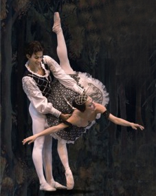

Volvió “Giselle” al Principal y lo hizo por una noble causa: el aniversario cuarenta y dos del Ballet de Camagüey y los treinta años de vida artística de Regina Balaguer y María Herminia Martínez. La celebración contó con la presencia de otras compañías danzarias como Endedans y el Folklórico de Reinaldo Echemendía. De otros lares llegaron el Ballet de Santiago de Cuba y el de Cámara de Holguín. Aunque las actuaciones tenían como objetivo agasajar a la primera compañía de ballet creada por la Revolución, ninguna alabanza fue tan cálida y especial como la que se tributó ella misma con el montaje de este clásico de la danza mundial.
Argumentar esta afirmación me obliga a remitirme al último plenario de la UNEAC celebrado en mi terruño. Allí escuché la historia de una Alicia Alonso renuente a entregar los derechos de su versión de “Giselle”. El incidente obligó a José Antonio Chávez, uno de los coreógrafos del conjunto agramontino, a versionar la obra original y generó otras dificultades, como las preguntas capciosas que algunos críticos dirigieran a la agrupación durante su gira por España. La historia, contada por la propia Regina Balaguer, creó un estado de ánimo. A partir de allí la noticia corrió como pólvora, algunas veces con un enfoque objetivo y otras engordada por el chovinismo camagüeyano.
El día doce de diciembre pude comprobar cuán pintoresco puede ser nuestro orgullo local. El chisme, al estilo de la más clásica película de espionaje, hablaba de unas partituras que le habían escamoteado a la propia Alicia. El acto de transcribirlas a hurtadillas había afectado la calidad de los documentos, lo que a su vez tornó difíciles los ensayos de la Orquesta Sinfónica, a la sazón encargada de suministrar la música para el desempeño de los bailarines.
Tanto el planteamiento de Regina como sus derivaciones en la sabiduría popular, reafirman que lo acaecido la noche del sábado no fue solo una función de ballet, sino el arribo a la mayoría de edad de una compañía danzaria. No hay razones para aplaudir el conflicto, aunque sí la autonomía que nos trajo. En lo adelante, debemos resaltar que hay una “Giselle” nuestra. Esta verdad ha de ser el primer presupuesto al emitir cualquier juicio, tal vez así no se repita lo ocurrido hace algunos meses, cuando una de las redactoras de la página cultural del periódico Adelante criticó ciertas incongruencias entre la coreografía de José Antonio Chávez y la creada por la Prima Ballerina.
De cualquier forma, no basta con declarar la independencia, es necesario lidiar con ella. Para ello tampoco faltaron obstáculos, en este caso propios de la dinámica de la compañía: Yulia Herrera, la bailarina que desde hace unos meses desempañaba el rol de “Giselle”, para esta ocasión ya no residía entre nosotros. Su puesto fue ocupado por Dianelis Muñoz, una artista joven y con poca experiencia en roles de este tipo. En la noche de estreno también estuvo Yanni García como el príncipe Albrecht. En ambos casos podemos convenir en que hubo limpieza y dignidad en las ejecuciones.

Pero, sin dudas, lo más loable no sucedió en el escenario, sino un poco más abajo, donde la Orquesta Sinfónica generaba la música para el desempeño de los bailarines. Gracias a la idea de combinar la ejecución danzaria con los atractivos de una orquesta tocando en vivo, nos percatarnos de que el teatro tiene foso. Dado su poco empleo, algunos pudieron pensar que se trataba de un local para recoger instrumentos o algún ardid concebido para tornar ridícula la ejecución de algún bailarín entretenido. Pues bien, no es así, el teatro tiene foso y la noche del doce de diciembre se le dio el mejor de los empleos. Ni la supuesta “conspiración de las partituras” ni la premura con que imagino se realizaron los ensayos, pudo impedir ese digno empaste entre danza y música que al menos yo percibí la noche del sábado. Más no se puede pedir, sobre todo si pensamos que, a diferencia de otras compañías, la de Camaguey carece de una orquesta que complemente sus presentaciones. Solo un detalle a censurar: las luces. Concuerdo con la escritora María Antonia Borroto en que debieron ser más tenues, solo así se podía lograr esa apariencia de invisibilidad que conviene a una orquesta en esos menesteres.
De cualquier forma, se trata de un pequeño detalle que no pudo empañar el trabajo compartido de dos instituciones culturales: el Ballet y la Orquesta Sinfónica. Oportunidad de lujo que al menos yo quise compartir con mi hija. Tal vez por eso, al caer el telón, mi esposa y yo fuimos testigo de otra función, menos técnica, pero igual de entretenida: la que ejecutó Sofía a lo largo de las calles camagüeyanas. Confieso que no me cansé de aplaudirla, sobre todo porque mi pequeña bailarina, tal vez sin pensarlo, me evitaba el trabajo de cargar su menudo cuerpecito, tarea engorrosa cuando no aparecen guaguas ni hay dinero para bicitaxis. Nada, que también el arte tiene su lado práctico.